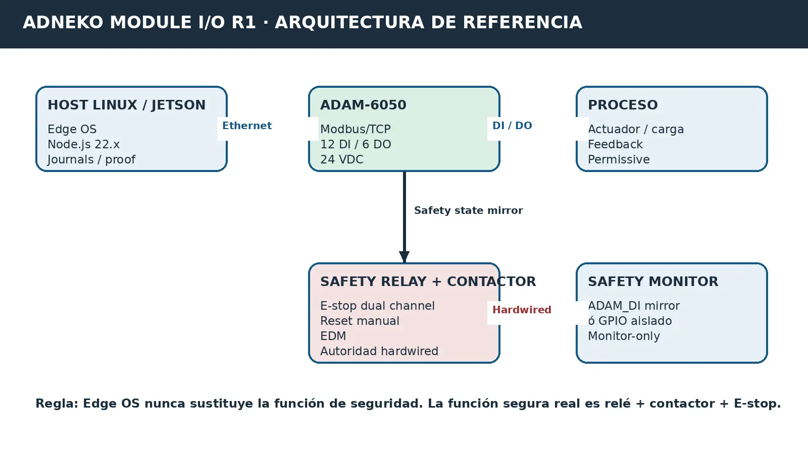

Integración I/O
Lectura de 12 entradas y operación gobernada de 6 salidas mediante un mapa verificable.
Runtime industrial basado en Edge OS para integrar ADAM-6050, supervisar señales, gobernar escrituras, ejecutar pruebas y generar evidencia verificable.
El software conecta el host Linux o Jetson con el módulo I/O mediante Modbus/TCP. Mantiene la función de seguridad física fuera del software, aplica autorización explícita a las escrituras y conserva journals, pruebas y receipts.
Lectura de 12 entradas y operación gobernada de 6 salidas mediante un mapa verificable.
Prepara, registra y valida el FAT físico sin presentar pruebas pendientes como aprobadas.
Genera evidencia, journals durables y receipts verificables ligados al release.
Bloquea START ante estados desconocidos, conflictos o autoridad insuficiente.

Paquete de ingeniería transferible Fase 1. La liberación industrial requiere Design Freeze, FAT00 físico P01-P08 y evidencia.
Configuración, integración y validación se definen según el entorno operativo del cliente.